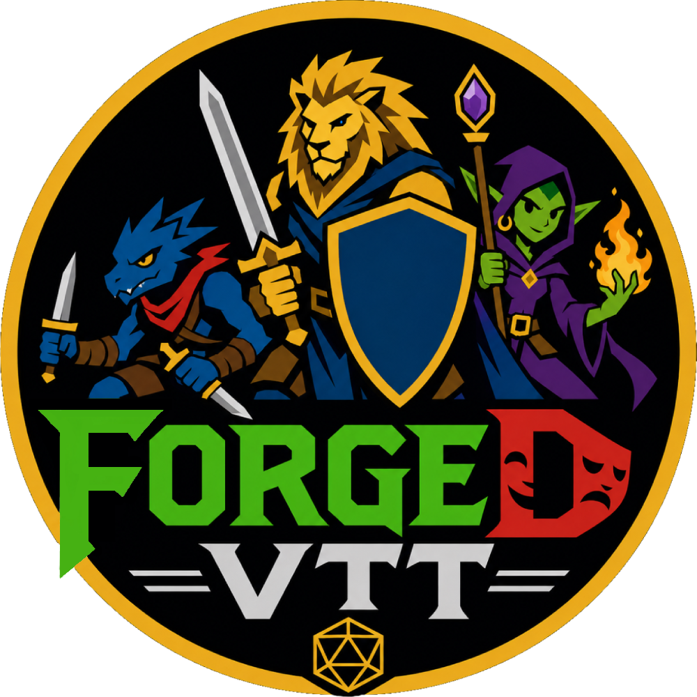

Self-hosted, high-performance Virtual Tabletop with real-time multiplayer token controls, 3D physics dice, dynamic fog of war, and native 5e compendium integration.
Minimum Requirements
ForgeD VTT is engineered to be exceptionally lightweight, self-hosted, and ultra-fast. Review the minimum and recommended system specifications below for Game Masters hosting campaigns and Players connecting via web browser.
Desktop Application
For running ForgeDVTT.exe with embedded local web server, database, and Cloudflare Tunnel.
Any Web Browser
No downloads required. Instant zero-install play on desktop, laptop, iPad/tablet, or mobile phone.
Performance Optimization Tips
ForgeD VTT Guide
Comprehensive per-button guide, GM hosting instructions, canvas controls, character sheet mechanics, and complete chat dice formula manual. Everything in ForgeD VTT documented in full.
Game Master Setup & Hosting Guide
ForgeD VTT runs directly from your personal computer with zero recurring subscription fees. Whether you want zero-configuration cloud tunnels, traditional router port forwarding, private encrypted mesh VPNs, or offline local Wi-Fi for in-person digital tables, select your preferred hosting method below.
| Method | Token Needed? | Port Forwarding? | Player Connection URL | Best For |
|---|---|---|---|---|
| 1. Cloudflare Tunnels | Optional (None for Quick Tunnel) | No Port Forward | https://*.trycloudflare.com |
Zero-Config Online Play |
| 2. Router Port Forwarding | None | Yes (Port 5050 TCP) | http://<Public-IP>:5050 |
Direct Connection & DDNS |
| 3. Mesh VPN (Tailscale) | None | No Port Forward | http://100.x.y.z:5050 |
Private Groups & CGNAT Bypass |
| 4. Alternative Tunnels | Optional (ngrok/bore) | No Port Forward | https://*.ngrok-free.app |
Quick Testing & Custom Proxy |
| 5. Local Network (LAN) | None | No Port Forward | http://192.168.1.X:5050 |
In-Person Tabletop & TV Tables |
Method 1: Cloudflare Tunnels (Quick & Dedicated)
Encrypted HTTPS edge tunnel with zero router configuration. Supports both zero-token Quick Tunnels and custom token subdomains.
- ForgeD VTT Desktop App or Node.js runtime
- Active broadband internet connection
- Bundled
cloudflaredbinary (pre-packaged in Windows installer)
Zero-Token Quick Tunnel (TryCloudflare — Recommended)
You do not need a Cloudflare account or tunnel token! ForgeD VTT automatically invokes Cloudflare's free Quick Tunnel:
- Open the ForgeDVTT Control Center desktop application (or run
node launcher.jsin CLI). - Leave the Cloudflare Tunnel Token field completely blank.
- Click 🚀 Start Online Tunnel.
- ForgeD VTT launches
cloudflared tunnel --url http://127.0.0.1:5050and automatically extracts your secure session URL (e.g.https://ancient-dragon-tavern.trycloudflare.com).
cloudflared --protocol http2 --no-prechecks tunnel --url http://127.0.0.1:5050
Optional / Advanced: Dedicated Subdomain with Token
If you want a permanent, unchanging URL (like mycampaign.forgedvtt.com or your own custom domain), paste your free Cloudflare Tunnel Token:
- Create a free tunnel in your Cloudflare Zero Trust Dashboard (Networks → Tunnels).
- Copy your Base64 tunnel token and paste it into the Cloudflare Tunnel Token input in the ForgeD VTT launcher.
- Enter your custom subdomain slug (e.g.
cosmic) and click 🚀 Start Online Tunnel.
trycloudflare.com URL is temporary and generates a new random name each time you restart the tunnel. If you want a consistent link for recurring weekly campaigns, consider Method 2 (Port Forwarding + DDNS) or Method 3 (Tailscale).
Method 2: Traditional Router Port Forwarding & Dynamic DNS
Host directly from your computer with 100% data ownership and no cloud intermediaries. Open port 5050 on your router to allow direct peer connections.
- Access to your home Wi-Fi / Router Admin Page (e.g.
192.168.1.1) - Public IPv4 address from your ISP (not behind Carrier-Grade NAT / CGNAT)
- Windows Defender Firewall access on your host computer
Reserve a Static Local IP for your PC
To ensure your router always forwards traffic to the right computer, give your machine a consistent internal IP address:
- Log into your router admin interface in your browser (usually
http://192.168.1.1orhttp://192.168.0.1). - Navigate to DHCP Settings or Address Reservation.
- Assign a static local IP to your computer (e.g.
192.168.1.100).
Create Port Forwarding Rule in Router
In your router's Port Forwarding / Virtual Server section, add an inbound rule:
ForgeDVTT
5050
5050
TCP
192.168.1.100
Allow Port 5050 in Windows Firewall
Allow inbound connections to port 5050 by running this 1-click command in PowerShell as Administrator:
New-NetFirewallRule -DisplayName "ForgeDVTT Inbound Port 5050" -Direction Inbound -LocalPort 5050 -Protocol TCP -Action Allow
Optional: Set up Dynamic DNS (DuckDNS / No-IP)
Most home ISPs change your public IP periodically. To give players a permanent friendly hostname instead of numbers:
- Register a free domain at DuckDNS.org (e.g.
mycampaign.duckdns.org). - Install the DuckDNS update client or configure DDNS directly in your router settings.
Method 3: Peer-to-Peer Mesh VPN (Tailscale & ZeroTier)
Connect over an encrypted virtual LAN powered by WireGuard. Perfect for GMs behind strict apartment or student dorm CGNAT where router port forwarding is blocked.
- Free Tailscale account (supports up to 100 devices free)
- Host PC and player computers install the lightweight Tailscale client
- Works on Windows, macOS, Linux, iOS, and Android
Install Tailscale on the Host Computer
Download and install the free Tailscale app from tailscale.com/download. Sign in with Google, GitHub, or Microsoft to activate your private encrypted network (Tailnet).
Invite Your Players to Your Tailnet
Have your gaming group install Tailscale. Then share access using either:
- Tailscale Share Node: In your Tailscale admin console, click your PC → Share Machine → generate an invite link for players.
- Shared Gaming Account: For recurring private groups, players can join under the same free organizational Tailnet.
Copy your Tailscale 100.x.y.z IP
Right-click the Tailscale tray icon and copy your machine's 100.x.y.z virtual IP address (or run tailscale ip -4 in terminal).
tailscale ip -4
Method 4: Alternative Tunnel Utilities (ngrok, bore, localtunnel)
Expose ForgeD VTT's local port (5050) over any third-party reverse proxy service. Great for fast temporary playtests or custom proxies.
- ForgeD VTT Server running locally on port 5050
- One installed tunneling utility (ngrok, bore, localtunnel, or playit.gg)
Option A: ngrok (Most Popular)
Download ngrok, sign in for a free authtoken, then start ForgeD VTT and run:
ngrok http 5050
ngrok prints a forwarding address like https://abc1-23.ngrok-free.app. Add /vtt.html to share with players.
Option B: bore (Zero-Token / Open Source)
bore is a lightweight Rust-based open source tunnel that requires no accounts, no tokens, and no signup:
bore local 5050 --to bore.pub
bore outputs an address like bore.pub:38491. Players connect via http://bore.pub:38491/vtt.html.
Option C: localtunnel (1-Command via Node / npx)
If you already have Node.js installed on your computer, launch a tunnel instantly with zero installation:
npx localtunnel --port 5050
Method 5: Local Area Network (LAN / In-Person & TV Tables)
Play locally around the same table or project maps onto a digital TV display. 100% offline capable with under 1ms local network latency.
- All devices connected to the same home Wi-Fi network or Ethernet switch
- No internet connection required (works during broadband outages!)
- Windows Firewall set to allow Private Network connections
Find your Host PC's Local IP Address
Open PowerShell or Command Prompt on the host computer and run:
ipconfig
Look for your active Wi-Fi or Ethernet adapter and note the IPv4 Address (usually looks like 192.168.1.50 or 10.0.0.25).
Start ForgeD VTT
Launch the ForgeDVTT Control Center desktop app (or run node server.js). When Windows asks to allow network access, ensure Private Networks (home or work) is checked.
Connect In-Person Players via Wi-Fi
Players at your table connect their phones, iPads, or laptops to your Wi-Fi and open your local IP in their web browser:
http://192.168.1.X:5050/vtt.html
Left Floating Toolbar
The vertical toolbar on the left edge provides quick access to active tabletop manipulation tools, measurement rulers, persistent spell templates, and layer controls.
Default interaction mode. Click any token to select it, drag across the canvas for a rubber-band box multi-select, or drag tokens to move across grid cells with collision and waypoint measurement.
Measure precise distances in feet across the grid. Supports Line, Radius Circle, 53.13° / 90° Cones, and Squares. Tap Spacebar during measurement to place multi-segment waypoints.
Place persistent spell templates (Fireball circles, Spirit Guardians, Darkness spheres, Wall of Fire lines) that stay rendered on the canvas until deleted. Select and tap Del to remove.
Broadcast an animated pulsing beacon on the canvas to draw all players' and GM's attention to a specific tile, trap, secret door, or tactical encounter zone.
GM tool to place light sources on the map (Torches, Lanterns, Campfires, Magical Darkness). Click on the canvas to place a light node, then customize its bright/dim radius, color tint, and emission angle.
Opens the Campaign Map Manager modal. Create blank tactical grids, upload custom map files (JPG/PNG/WEBP), import official 5eTools adventure maps, or calibrate grid dimensions.
Opens or minimizes the floating Combat Initiative Tracker carousel on the screen. Synchronizes round counters, turn order highlights, and Dex tiebreakers across all connected players.
Opens the floating Paint Tools ribbon. Draw freehand with pencil and brush, place tactical lines, arrows, rectangles, circles, multi-point polygons, text labels, and flood fills with grid snapping and undo/redo support.
GM tool to design and place interactive dungeon hazards: proximity-triggered traps with saving throw prompts and DC checks, plus two-way spatial portals and inter-map teleportation gates.
Quickly isolate canvas layers: ~+1 Token Layer, ~+2 GM Secret Layer (invisible to players), ~+3 Lighting Layer, ~+4 Notes Layer, ~+5 Map Background Layer, and ~+6 Portals Layer.
Safely disconnects your WebSocket connection from the active campaign room and redirects back to the ForgeD VTT web portal homepage.
Canvas Freehand Drawing & Paint Tools
ForgeD VTT includes a hardware-accelerated 2D canvas drawing engine. Sketch tactical plans, draw impromptu dungeon sketches, drop text labels, place geometric shapes, or erase annotations with real-time multiplayer synchronization and full history undo/redo stacks.
Crisp, precision freehand sketching. Ideal for writing handwriting notes, marking secret doors on the GM layer, or drawing detailed tactical symbols directly on the map.
Anti-aliased, rounded-cap paintbrush with dynamic velocity smoothing. Perfect for organic terrain contours, rivers, blood trails, and broad map painting.
Click and drag to project straight tactical lines or directional arrowhead vectors. Essential for indicating line-of-fire, marching orders, and party exploration routes.
Quickly drag out bounding rectangles or perfect circles. Support Outline Only, Fill Only, or Outline + Fill with semi-transparent tinted interiors for hazard zones and rooms.
Click successive points on the map to define complex irregular rooms, winding cave walls, or hazard zones. Double-click anywhere to automatically close the perimeter.
Click any bounded drawing area or grid sector to flood it with the active theme color swatch. Perfect for quickly tinting deep water, acid pools, or consecrated ground.
Click anywhere on the battlemap to spawn an editable label. Type room numbers, puzzle clues, or trap hints directly into the scene with crystal-clear vector rendering.
Rub over existing drawings with precision alpha blending. Cleans away pencil marks, brush strokes, and shapes without affecting token sprites or map background art.
Stroke Weights & Grid Magnet
Fine-tune every stroke with five standardized weight presets and magnetic grid snapping:
- 5 Stroke Widths:
2px(Hairline),4px(Standard),8px(Bold),16px(Marker), and24px(Broad). - Grid Magnet Snapping: Click the magnet toggle in the ribbon to snap shape anchors, lines, and boxes directly to grid intersections and cell centers.
- Undo & Redo History: Tap Ctrl + Z or click Undo to revert strokes; tap Ctrl + Y or click Redo to restore them.
Swatch Palette & Permissions
Vibrant colors tailored for tactical contrast with built-in player ownership security:
- 10 Tactical Swatches: Gold (#eab308), Red (#ef4444), Blue (#3b82f6), Green (#22c55e), Purple (#a855f7), White, Silver, Orange, Cyan, and Deep Obsidian.
- Custom Color Picker: Click the custom color input in the ribbon for any hex code or RGB tone.
- Layer Permissions: Players can freely draw on the Token Layer and edit their own drawings. The Game Master retains master permissions to erase or edit drawings across all 6 layers.
Token Controls, Rotation & Radial Menu
Token Movement & Waypoints
Click and drag your token across the map. While dragging, tap Spacebar at any corner to drop a movement waypoint! The measuring ruler automatically calculates total movement cost across obstacles.
- Snap to Grid: Automatically snaps to square or hex cell centers.
- Multi-Token Drag: Shift+Click or drag a selection box to move whole parties.
Token Rotation & Flipping
Rotate or mirror tokens facing direction with instant hotkeys:
- Q / E: Rotate token by 45° counter-clockwise / clockwise.
- Shift + Q/E: Fine rotation step by 5°.
- W / S: Flip token vertically.
- A / D: Flip token horizontally (mirror facing).
- Del / Backspace: Delete selected token(s).
Token Radial Context Menu (Right-Click)
Right-clicking any token opens the rich circular context menu with instant creature controls:
| Menu Item | Icon | Function & Description |
|---|---|---|
| HP Quick Adjust | Adjust current HP, Max HP, or add temporary HP directly from canvas without opening sheets. | |
| AC & Defense | View and modify base Armor Class and active defensive bonuses. | |
| Condition Markers | Toggle 5e condition overlays (Blinded, Charmed, Deafened, Frightened, Grappled, Incapacitated, Invisible, Paralyzed, Poisoned, Prone, Restrained, Stunned, Unconscious). | |
| Token Scale / Size | Change size from Tiny (0.5×), Medium (1×), Large (2×2), Huge (3×3), to Gargantuan (4×4). | |
| Dynamic Torch / Sight | Equip token with a 30ft/60ft torch light emission or darkvision radius that pierces Fog of War. | |
| Open Creature Sheet | Opens full 5e statblock or character sheet in the left sliding inspector panel. |
Token Sight Sync & Senses
Eliminate manual vision calculations when dropping tokens:
- 1-Click Sheet Senses Sync: In the Token Edit modal, tap Sync Sheet to automatically read the creature's Darkvision, Blindsight, Truesight, and Tremorsense directly into the token's raycast vision radius.
- Light Emitting Torches: Configure bright and dim light emission radiuses with custom color tints (warm torchlight, cold faerie fire, abyssal green).
Token Auras & Blend Modes
Render persistent magical auras and spell fields surrounding tokens:
- Multiple Concurrent Auras: Add unlimited distinct auras per token with custom distance in feet (e.g. 10ft Paladin Aura of Protection, 15ft Spirit Guardians).
- 3 Blend Modes: Choose Overlay (vibrant glow), Vignette (soft gradient edges), or Shadow (darkness/obscurity fields) with custom hex color swatches.
- Save Token Defaults: Click Save Token Defaults to remember all auras, sight radiuses, and HUD preferences for that actor permanently.
Canvas HUD, Navigation & GM View Broadcast
Bottom-left HUD badge showing current zoom percentage (10% to 500%). Click the badge to type an exact percentage value, use the zoom slider, or tap + / - on your keyboard.
Displays the exact global map grid coordinates X: [val] Y: [val] of your mouse cursor in real-time, assisting GMs in tile alignment and trigger placements.
GM exclusive command. Instantly synchronizes your exact screen coordinates and zoom magnification to all connected players' screens, bringing everyone's focus to the battle.
When previewing maps in secret without players, a top banner alerts the GM with a quick-action "Push to Players" button to reveal the battlemap to the party.
Canvas Token Display Presets (Settings)
Customize HUD bar positions, nameplate visibility, and status markers in Settings → Canvas Token Display:
- Tactical HUD: External health bars, permanent high-contrast nameplates, and clear status condition badges on token corners. Maximum combat legibility.
- Minimal HUD: Clean cinematic view. Health bars and nameplates only reveal when hovering over a token.
- Classic HUD: Compact inside top/bottom bars with integrated temp HP shield markers.
- GM Monster Health Ceilings: GMs can enforce player visibility rules for monster health: full numeric HP, percentage health bar, bloodied/critical condition buckets, or totally concealed bars for intense boss encounters.
Mobile & Tablet Touch Controls
ForgeD VTT is engineered from the ground up to be fully touch-responsive. Play from smartphones, iPad, Android tablets, or touch laptops with a dedicated Mobile UI layout, gesture navigation, slide-up drawers, and finger-friendly action bars.
Floating Action Button docked on the bottom-right of mobile displays. Tapping opens the radial tool drawer to switch between Select, Measure, Shapes, Ping, Paint, and Lighting.
When dragging any token with a finger or stylus, a floating badge appears dynamically above your touch point, tracking exact walking distance in 5ft grid increments in real-time.
Tapping any token on mobile docks a streamlined action bar at the screen base with 1-tap shortcuts to open the full character sheet, toggle status conditions, or edit token attributes.
Slide-up bottom sheets for AOE shapes, color swatch pickers, traps, and portals replace bulky desktop dialogs with gesture-friendly cards that tuck away effortlessly.
Complete Touch & Gesture Reference
| Gesture | Action Scope | Resulting Tabletop Behavior |
|---|---|---|
| 1-Finger Drag | Canvas Background | Smooth panning across the dungeon battlemap. |
| 1-Finger Drag | Token Sprite | Moves the token cell-by-cell with the live walking distance indicator pill. |
| Pinch to Zoom | Canvas | Fluid pinch-in / pinch-out magnification scaling between 10% and 500%. |
| Long Press (500ms) | Any Map Location | Drops a radar ping beacon to draw the party's attention to that spot. |
| Long Press (500ms) | Token Sprite | Opens the radial context ring for HP, conditions, defense, and light sources. |
Combat Initiative Carousel Tracker
The floating combat carousel displays the synchronized initiative order for party members, companions, summoned familiars, and monsters.
| Button / Control | Visual Icon | Action & Description |
|---|---|---|
| Drag Handle | Click and drag to reposition the tracker freely across any area of your screen. | |
| Round Counter | Displays current combat round number. Automatically increments after the last combatant's turn. | |
| Position Selector | Docking style dropdown: Right Aligned, Top Aligned, or Bottom Aligned. |
|
| Minimize Tracker | Collapses tracker into a compact turn pill showing only the current active creature. | |
| Next Turn (GM) | Advances combat to the next character in turn order and pulses their token on the canvas. | |
| Previous Turn (GM) | Steps back to the previous character's turn if an action was rewound. | |
| Add Creature (GM) | Opens quick modal to add custom initiative rolls for homebrew monsters or NPCs. | |
| Clear Tracker (GM) | Ends the encounter, clears all combatants, and resets round count back to Round 1. |
Chat & 3D WebGL Physics Dice Engine
ForgeD VTT combines real-time multiplayer chat with a high-performance 3D WebGL physics dice simulation powered by Cannon.js. Enjoy authentic polyhedral tumbling, order-preserving physics lanes, isolated critical hit badges, and customizable dice skins.
Authentic polyhedral dice (d4, d6, d8, d10, d12, d20, d100) rendered in real-time 3D with gravity, collision bounce, and bottom bumper containment rails. Dice roll into order-preserving lanes so multi-die attacks remain easy to read.
Customize your dice appearance in Settings. Choose from curated visual themes including Obsidian Gold, Cosmic Nebula, Frosted Marble, Celestial Blue, and Blood Ruby with zero-distortion face numerals.
Rolling a Natural 20 triggers a radiant gold Critical Hit banner, while a Natural 1 displays a crimson Fumble skull badge. Badges are isolated per individual die roll with synchronized fadeouts in both the 3D canvas and chat card.
1-click buttons to instantly roll any standard polyhedral die. Right-click any die button to enter a custom quantity (e.g. 4d6, 8d6) or add flat modifiers directly without typing full commands.
Toggle roll modes: Adv (Advantage, keeps highest of 2d20), Norm (Standard), Dis (Disadvantage, keeps lowest of 2d20), and GM (Whisper roll secretly to GM only).
Persistent message history with rich markdown formatting, clickable dice chips, spell cards, and private whispers (/w [name] [message]) between players and Game Master.
Master Chat Dice Commands & Syntax Reference
ForgeD VTT features a powerful mathematical dice engine supporting standard D&D rolls, advantage/disadvantage, exploding dice, rerolls, math functions, and target success counting. Type /roll [formula] or /r [formula] in chat:
| Roll Category | Syntax / Operator | Example Command | Explanation & System Effect |
|---|---|---|---|
| Basic Dice Roll | XdY + Z | /r 1d20 + 7 | Rolls one 20-sided die and adds +7 modifier. |
| Multiple Dice | XdY + NdM | /r 8d6 + 2d8 + 4 | Rolls multiple dice pools (e.g. Fireball + Divine Smite). |
| Keep Highest (Advantage) | khN or kN | /r 2d20kh1 + 5 | Rolls 2d20 with Advantage, keeping highest 1 die. |
| Keep Lowest (Disadvantage) | klN | /r 2d20kl1 + 3 | Rolls 2d20 with Disadvantage, keeping lowest 1 die. |
| Drop Lowest | dlN | /r 4d6dl1 | Ability Score Generation: Rolls 4d6 and drops lowest 1. |
| Drop Highest | dhN | /r 4d6dh1 | Rolls 4d6 and drops the highest 1 die. |
| Reroll Exact Value | rN | /r 1d20r1 | Halfling Luck: Rerolls any 1 rolled indefinitely until != 1. |
| Reroll Comparison | r<=N or r>=N | /r 2d6r<=2 | Great Weapon Fighting: Rerolls 1s and 2s on damage dice. |
| Reroll Once | roN or ro<=N | /r 1d20ro1 | Rerolls a 1 exactly once, keeping the new result. |
| Exploding Dice | ! or x | /r 1d6! | Rolls max value (6) and automatically rolls an extra die. |
| Exploding Threshold | !>N or !>=N | /r 1d10!>=8 | Explodes whenever die result is 8, 9, or 10. |
| Compounding Explode | !! | /r 1d6!! | Exploding dice that adds all bonus rolls into a single number. |
| Penetrating Explode | !p | /r 1d6!p | Exploding die with -1 penalty on each subsequent roll. |
| Expanded Critical Hit | cs>=N | /r 1d20cs>=19 + 6 | Champion Fighter: Triggers Critical Success on 19 or 20. |
| Expanded Critical Fumble | cf<=N | /r 1d20cf<=2 | Triggers Critical Fumble on rolls of 1 or 2. |
| Target Success Counting | >N or ts>=N | /r 8d10>7 | Counts number of dice that meet or exceed target DC 8. |
| Math & Rounding | floor() / ceil() | /r floor((1d20+4)/2) | Rounds result down or up according to 5e rules. |
| Average & Max Functions | avg() / dmax() | /r avg(8d6) | Calculates fixed average or maximum possible roll value. |
| Proficiency Variable | pb | /r 1d20 + pb + 3 | Injects character proficiency bonus automatically. |
| Secret GM Whisper | GM Toggle / /w GM | /r 1d20+9 (with GM toggle) | Sends dice breakdown secretly to the Game Master only. |
Character Builder & Level Up Assistant
ForgeD VTT features an automated Character Builder and Level Up Assistant that scans the extensive 5e compendium database to build characters from scratch or advance their levels in seconds. Every class feature, archetype progression, hit die pool, and weapon macro is generated automatically.
Set Your Core Class & Level in the Build Tab
Open your character sheet and click the Build tab (or click the glowing Level Up button in the sheet header). Choose your class (e.g. Fighter, Rogue, Wizard), select your archetype subclass (e.g. Battle Master, Arcane Trickster, Evocation), pick your race/species, and set your target level (1 to 20). The VTT automatically updates your proficiency bonus, hit die total, and available spell slots.
Run the 1-Click Character Feature Audit
Click the Open Character Builder & Level Up Assistant button. The assistant instantly audits your character's current level against the official class feature trees. It presents a clean, organized checklist of all available features, archetype powers, racial traits, background items, and spell recommendations up to your level.
Select Features & Apply to Sheet
Review the audited features with checkboxes pre-selected for your level. Click Apply & Import to Character. All selected abilities, counter trackers, and traits are automatically created in your sheet's Abilities tab—no manual copy-pasting required.
Automatic Weapon Attack Macro Creation
Whenever you import weapons or equip gear, ForgeD VTT automatically constructs attack macros for your Actions list. It intelligently detects weapon properties: choosing Dexterity over Strength for Finesse weapons if your DEX is higher, applying weapon enhancement bonuses (like +1, +2, or +3), and generating separate damage rows for versatile two-handed strikes or bonus damage dice!
Eliminate complex roll math with fully automated attack and damage action generation:
- Finesse & Ranged Auto-Pick: Ranged weapons automatically use Dexterity; finesse weapons automatically select whichever stat is higher between Strength and Dexterity.
- Magic Weapon Bonuses: Recognizes
+1,+2, or+3items in your inventory and automatically applies the enchantment bonus to both attack and damage rolls. - Multi-Row Damage Support: Weapons with versatile grips (e.g. Longsword 1d8 / 1d10) or elemental riders (e.g. Flame Tongue +2d6 fire) automatically build multiple clickable damage rows.
Flexible character progression for standard builds and advanced multiclass veterans:
- Multiclass Level Tracking: Combine levels across multiple classes (e.g. Paladin 6 / Sorcerer 4) with automatic multiclass spell slot matrix calculations.
- Reactive Stat Modifiers: Changing any base ability score (STR, DEX, CON, INT, WIS, CHA) instantly updates saving throws, passive perception, armor class, and skill checks across the entire party view.
- Hit Dice Pools: Automatically tallies heterogeneous hit dice pools across multiple classes (e.g., 6d10 + 4d6) for spending during Short Rests.
Equipment, Armor Engine & Carry Weight
ForgeD VTT provides a dynamic 5e equipment inventory with drag-and-drop compendium importing, automatic Armor Class calculation across all armor categories, coin weight simulation, and attunement management.
Equipping armor from your inventory recalculates your sheet AC instantly according to official 5e rules:
- Light Armor (Padded, Leather, Studded Leather): Base AC + character's full Dexterity modifier without any cap.
- Medium Armor (Hide, Chain Shirt, Scale Mail, Breastplate, Half Plate): Base AC + Dexterity modifier, automatically capped at a maximum bonus of
+2. - Heavy Armor (Ring Mail, Chain Mail, Splint, Plate): Flat base AC with zero Dexterity bonus. Flags stealth disadvantage indicator.
- Shields: Checking the Equip box on a shield automatically stacks
+2 AConto your total defense.
Comprehensive physical weight tracking for all adventurer belongings and wealth:
- Coin Weight Calculation: Platinum, Gold, Electrum, Silver, and Copper pieces are summed and divided by 50 (
(PP + GP + EP + SP + CP) ÷ 50 = lbs), adding real physical weight to your gear. - Live Encumbrance Meter: Monitors total carried weight against maximum carry capacity (
STR × 15 lbs). - Variant Encumbrance Alerts: Automatically marks when your character is Encumbered (
STR × 5 lbs) or Heavily Encumbered (STR × 10 lbs) with speed penalties.
Search & Drag-and-Drop Compendium Items
In the Equipment tab, click Add Item or browse the Compendium drawer. Filter items by category (Weapons, Armor, Potions, Scrolls, Wondrous Items, Rings, Wands) or search by name. Click the + button or drag the item directly into your inventory.
Equip Gear & Attune to Magic Items
Click the Equip checkbox on your weapons and armor. Your AC updates instantly, and weapon attack rolls are placed in your Actions panel. For magic items requiring attunement, toggle one of the 3 dedicated attunement bubbles.
Track Ammunition, Potions & Coin Purses
Easily increment or decrement arrows, bolts, torches, and potion doses directly on the item row. Adjust your PP, GP, EP, SP, and CP coin purses, watching the live weight bar adjust automatically.
| Armor Category | 5e AC Calculation Formula | Dexterity Modifier Impact | Stealth & Shield Compatibility |
|---|---|---|---|
| Light Armor | Base AC (11–12) + DEX Mod |
Full Dexterity bonus applied | No stealth penalty; +2 AC with equipped shield |
| Medium Armor | Base AC (12–15) + DEX Mod (Max +2) |
Capped at maximum of +2 bonus | Disadvantage on Stealth for Scale & Half Plate; +2 with shield |
| Heavy Armor | Flat Base AC (14–18) |
No Dexterity bonus applied | Disadvantage on Stealth checks; +2 AC with equipped shield |
| Shield | +2 AC Stacking Bonus |
N/A | Equipping adds flat +2 to current armor calculation |
| Currency Weight | Total Coins ÷ 50 = lbs |
N/A | Added directly to total weight bar and encumbrance limits |
Spellbook Setup, Import & Dynamic Upcasting
ForgeD VTT delivers an intelligent 5e spellcasting manager organized across cantrips and 1st through 9th level spell slots. Featuring compendium search filters, prepared spells tracking, and interactive upcast prompts with per-row scaling drawers.
Cast spells at higher slot levels with automatic bonus dice calculation:
- Interactive Slot Prompt: Clicking Cast on any leveled spell with scaling (e.g. Cure Wounds, Fireball, Spirit Guardians) opens an upcast prompt showing available slots.
- Formula Scaling Drawers: Expand any spell card to view its base formula and per-slot scaling rules (e.g.
+1d8 per slot level above 1st). - Automated Slot Deduction: Casting at a higher level automatically expends a slot of that chosen level and rolls the scaled dice in chat.
Cantrips and casting statistics automatically grow as your character advances:
- Tiered Cantrip Scaling: Damage cantrips automatically upgrade at levels 5, 11, and 17 (e.g., Fire Bolt automatically deals 1d10 at levels 1–4, 2d10 at 5–10, 3d10 at 11–16, and 4d10 at 17+).
- Spell Attack & DC Binding: Spell attack bonus (
Proficiency + Spellcasting Mod) and Spell Save DC (8 + Proficiency + Spellcasting Mod) stay bound to your main casting ability. - Warlock Pact Magic Slots: Short rest Pact Magic slots are tracked independently from standard multi-class spell grids.
Search & Filter the Spell Compendium
Open the Spells tab on your sheet and click Add Spell. Filter by class spell list (Wizard, Cleric, Druid, Bard, Sorcerer, Warlock, Paladin, Ranger, Artificer), spell level (Cantrips to 9th level), school of magic (Evocation, Abjuration, Necromancy, etc.), or ritual tag. Click + to import directly into your spellbook.
Prepare Spells & Toggle the Prepared Filter
Click the Star icon next to spells you have prepared for the day. Use the Show Prepared Only toggle button to filter out inactive spells during combat, giving you a clean and rapid tactical interface.
Cast Spells Directly to Multiplayer Chat
Click Cast next to your spell. Choose your slot level if upcasting. The spell card broadcasts to everyone in the campaign, complete with spell description, range, components, saving throw DC prompt, and 3D physics dice rolls!
Class Features, Feats & Active Rest Counters
The Abilities tab organizes your racial traits, class archetype features, feats, and custom resource counters. Features tagged for Short Rest or Long Rest automatically replenish during rest routines with one click.
Rest buttons in the sheet header handle standard 5e resource refresh routines:
- Short Rest (SR): Prompts for spending available Hit Dice (rolled directly from the Hit Dice pill with CON modifier added to chat). Automatically replenishes all abilities tagged with
SR(e.g. Fighter Action Surge, Monk Ki, Warlock Pact Slots, Bardic Inspiration). - Long Rest (LR): Instantly resets current HP to maximum, clears Temporary HP, restores spent Hit Dice up to half of character level, and fully recharges all spell slots and
LRfeatures (e.g. Barbarian Rage, Paladin Lay on Hands, Spell Slots).
Create and monitor flexible resource pools for any official or custom ability:
- Clickable Counter Bubbles: Click pips or use +/- stepper controls to expend charges (e.g., Sorcery Points, Superiority Dice, Luck points).
- Feats & Racial Traits: Import feats like Sharpshooter, War Caster, or Fey Teleportation with complete rule descriptions and passive benefits.
- Custom Resource Pools: Add custom counters for homebrew powers, magic item charges, or survival tracking (rations, waterskins, exhaustion levels).
| Rest Type | Health & Hit Dice Effect | Recharged Features | Party Broadcast |
|---|---|---|---|
| Short Rest (1 Hour) | Spend available Hit Dice (1dDie + CON) to heal HP |
All features tagged SR, Warlock Pact Magic slots, Channel Divinity |
Logs Hit Dice roll totals & spent charges to multiplayer chat |
| Long Rest (8 Hours) | Restores HP to maximum, clears Temp HP, recovers ½ spent Hit Dice | All spell slots, all LR features (Rage, Lay on Hands, Wild Shape, Ki) |
Synchronizes full health bar to canvas token and announces rest completion |
Multi-Tab Slideout Sheet Dock
ForgeD VTT replaces legacy two-tab sheet limits with an unlimited, drag-and-drop slideout tab dock along the left screen border. Open multiple player character sheets, named companion sheets, and monster statblocks simultaneously without cluttering your tactical map.
Click and drag any sheet dock tab vertically along the left edge to reorder priority. Tab order automatically persists in your browser's local storage per campaign across restarts.
Hovering over any dock tab highlights its matching token on the canvas with a radiant glow ring. Conversely, hovering a token on the battlemap highlights its docked sheet tab.
During active combat initiative, the dock tab belonging to the current actor continuously radiates a smooth golden pulse ring, keeping the GM and players instantly oriented.
When managing multiple generic monsters (e.g. 5 Goblins or 3 Wolves), a single shared tab houses the statblock, while hover tooltips display interactive chips to switch focus between each placed token.
Partitioning Architecture
How the Sheet Dock organizes actors automatically:
- Player Characters: Every player character opens into its own dedicated slideout tab with custom class crests, avatar portraits, and HP gauges.
- Named NPCs & Companions: Important named allies, familiars, and villains receive individual tabs.
- Popout Support: Click the ⧉ pop-out icon on any tab tooltip to detach the sheet into an independent OS window for multi-monitor gaming.
Interactive Tab Controls
Hovering over any slideout tab reveals an extended quick-control tooltip:
- Actor Name & Portrait: Full-resolution token artwork and creature designation.
- Close Button: 1-click tab dismissal (X) to remove the sheet from the dock without deleting the actor or token.
- Focus Token: Double-clicking any tab automatically pans and centers the battlemap camera onto that token.
Bestiary, Custom NPCs & Companions
ForgeD VTT integrates a comprehensive 5e monster compendium with interactive creature sheets, instant drag-to-canvas token spawning, homebrew NPC building, and linked companion/familiar ownership for players.
Every monster in the compendium opens as an interactive creature sheet with live rolling:
- 1-Click Attacks & Multiattack: Click any weapon, claw, bite, or breath weapon action to broadcast full attack bonuses, reach/range, and damage dice formulas directly to chat with clickable damage roll chips.
- In-Line Traits & Recharges: Special traits and recharge powers (e.g.
Recharge 5–6) feature in-line clickable dice chips for fast resolution without opening external references. - Condition Ring Markers: Creature sheets allow toggling status condition rings (e.g. Blinded, Charmed, Paralyzed, Poisoned, Prone, Stunned) that render immediately on the token on the canvas grid.
- Sensory & Defensive Traits: Darkvision, Blindsight, Tremorsense, Truesight, and damage resistances/immunities are clearly displayed on the header for quick tactical assessment.
Forge your own bosses, unique campaign encounters, or non-player characters:
- Clone Existing Monsters: Duplicate any existing SRD stat block with a single click to customize HP, Armor Class, Challenge Rating, or modify spell lists while keeping the foundation intact.
- Custom Action Engine: Add custom melee attacks, ranged attacks, legendary actions, reactions, and lair actions with custom dice formulas and formatted descriptions.
- Campaign Database Persistence: Custom NPCs and homebrew creations are stored directly in your campaign database and remain available across all sessions.
Seamlessly assign creature sheets to players for ranger beasts, wizard familiars, summoned mounts, or druid wild shapes:
- Linked Character Dropdown: Select a player character from the creature sheet's Linked Character dropdown to delegate token ownership to that specific player.
- Dual Canvas Movement & Rolling: Both the assigned player and the GM have full permission to move the companion token on the grid, view its sheet, and execute attack/ability rolls.
- Amber Companion Badge: Companion tokens display a distinct amber badge on the canvas and in the sidebar roster, distinguishing them from enemy NPCs and regular party tokens.
Spawning Monsters onto the Tactical Grid
Open the Bestiary tab in the sidebar. Search for a monster by name or filter by Challenge Rating. Drag the monster card directly onto the canvas. A new token is created at the grid snap position, automatically bound to its creature sheet and ready for initiative tracking.
Creating a Custom Boss or Homebrew NPC
Click + New Monster in the Bestiary or click the Duplicate icon on an existing monster. Edit the ability scores, HP dice formula, AC, and actions in the editor. Click Save to Bestiary. Your homebrew monster is immediately searchable and ready to spawn.
Linking a Familiar or Companion to a Player
Spawn the creature (e.g. Wolf, Owl) onto the map. Double-click the token to open its sheet. In the header, click the Linked Character dropdown and select the player character. The player can now move this token and roll its attacks directly from their view.
| Feature | Behavior & Permission | Trigger / Location |
|---|---|---|
| Drag to Canvas | Spawns token on grid, generates creature instance and binds sheet | Drag card from Bestiary sidebar onto map |
| 1-Click Attack | Rolls attack roll and damage dice with damage type to multiplayer chat | Click action button on creature sheet |
| Linked Companion | Grants assigned player dual token movement and roll access | "Linked Character" dropdown in creature sheet header |
| Condition Ring | Toggles visual status effect ring directly on canvas token | Token radial menu or creature sheet conditions |
| Clone Monster | Copies entire SRD stat block into homebrew builder for quick tweaking | Duplicate icon in Bestiary card list |
Campaign Map Manager & Modals
Campaign Map Manager Modal
Click the map button on the left toolbar to open the Map Manager:
- Blank Tactical Grid: Create a battlemap with customizable width, height, and cell size.
- Import 5eTools Maps: Select any official D&D 5e adventure (e.g. Curse of Strahd, Phandelver) and import hi-res dungeon maps with 1 click.
- Upload File: Upload local JPG/PNG/WEBP files directly to your server.
- External URL: Paste any web link, GIF, or video stream.
Map Grid Calibration
Edit any map to calibrate its grid parameters:
- Grid Type: Choose Square, Hex (Vertical), or Hex (Horizontal).
- Cell Size: Adjust pixels per grid square (20px to 200px).
- Grid Shift X & Y: Fine-tune grid alignment to align with artwork.
Atmospheric Weather Engine & Particle Layers
Transform flat battlemaps into living, breathing tactical environments. ForgeD VTT features a zero-allocation, hardware-accelerated 2D canvas weather engine supporting up to 3 simultaneous particle layers, dynamic lightning flashes, particle impact splash ripples, and scene saturation filters.
Stack different atmospheric phenomena together on the same map (e.g. Fog + Rain, Ash + Embers, or Aurora + Arcane Motes) with independent speed, particle intensity, and wind angle.
Hardware-accelerated color grading slider. Desaturate to 0% for bleak Shadowfell dread and noir flashbacks, or boost to 200% for vivid high-fantasy Feywild blossoms.
When Storm is active, randomized double-burst lightning flashes illuminate the canvas with dramatic illumination shifts. Rain and hail produce expanding impact ripple splashes on ground contact.
Each player controls local performance under Settings → Appearance & Themes: High (full particle density at 60 FPS), Low (particle budget reduction for laptops), or Off.
Complete 16-Preset Weather Reference Guide
Configure any combination of weather layers inside the Map Manager → Edit Map modal:
| Preset Name | Visual Particle Mechanics | Recommended Campaign Biome / Atmosphere |
|---|---|---|
| Rain | Downward velocity streaks with dynamic expanding circular splash ripples upon ground contact. | Overcast temperate forests, drenched city streets, coastal squalls. |
| Storm | Heavy wind-tilted deluge with randomized procedural lightning screen flashes and variable wind shears. | High seas tempest, mountain summits, apocalyptic boss confrontations. |
| Snow | Gentle drifting crystalline snowflakes with horizontal sinusoidal sway and varying air resistance. | Arctic tundras, glacier passes, Icewind Dale frost zones. |
| Hail | High-speed frozen ice pellets striking the battlemap with sharp bounce physics and ripple sparks. | Severe mountain peaks, unnatural magical winter blizzards. |
| Fog | Dense rolling banks of volumetric mist with slow horizontal drift and soft opacity breathing. | Cemeteries, Barovian swamps, haunted crypts, dense morning bogs. |
| Sandstorm | Fast-traveling horizontal dust motes and abrasive sand streaks reducing scene visibility. | Anauroch wastes, desert dunes, eroded canyon ravines. |
| Sunlight | Angled volumetric light shafts (God rays) with gently floating warm luminous dust motes. | Sunlit glades, celestial cathedrals, holy temples, forest clearings. |
| Leaves | Falling autumn foliage with dynamic 2D tumble rotation and gentle wind gusts. | Autumn woodlands, Elven sanctuaries, ancient groves. |
| Fireflies | Wandering bioluminescent insects pulsing gentle warm green light in rhythmic nocturnal cycles. | Enchanted bayous, tranquil midnight campsites, fairy woods. |
| Spores | Drifting fungal mycelium motes with subtle vertical buoyancy oscillation and soft glow. | Underdark caverns, bioluminescent fungi forests, Zuggtmoy lairs. |
| Underwater | Ascending buoyant bubble columns paired with shifting caustic sea floor light refractions. | Sunken shipwrecks, drowned aboleth ruins, elemental plane of water. |
| Embers | Ascending incandescent volcanic cinders with thermal upward acceleration and fiery glow. | Dragon lairs, burning towns, forge foundries, volcanic calderas. |
| Ash | Heavy grey volcanic ash flakes and soot particles drifting downward over scorched ground. | Post-battle ruins, scorched wastelands, active volcanic fissures. |
| Arcane | Swirling mana sparks with erratic orbital drift and prismatic purple-blue glimmer. | Archmage laboratories, dimensional rifts, wild magic surges. |
| Aurora | Shimmering celestial curtains of emerald, cyan, and violet waving across the upper atmosphere. | Astral Plane, northern skies, divine summits, polar nights. |
| Void | Inward-spiraling abyssal darkness motes and miniature reality rips collapsing in silence. | Far Realm anomalies, Astral voids, Netheril shadow gates. |
How to Add Weather to a Map
- Open the Left Toolbar and click Map Manager.
- Find your active battlemap and click Edit ().
- Scroll down to the Weather Effects section.
- Click + Add Weather Layer and select any of the 16 atmospheric presets.
- Adjust the layer's Intensity Slider and Wind Angle, then click Done. Weather automatically initializes for all connected players!
Map State Persistence
Weather layers are strictly linked to each map's configuration in the campaign database:
- Automatic Room Sync: When the GM switches maps or pushes a new scene to players, the active weather layers transition instantly with zero manual reconfiguration.
- Zero Canvas Ghosting: Particle allocations and splash pools reset cleanly between maps without lingering memory or frame drops.
Dungeon Map Tools: Walls, Doors, Traps & Portals
ForgeD VTT provides built-in tactical dungeon mechanics: interactive doors with swing hinges and locks, hidden proximity traps with saving throw prompts, spatial and inter-map teleportation portals, and 2D raycasted Fog of War with token lighting presets.
Draw Walls & Configure Interactive Doors
Select the Wall Tool from the left toolbar to draw occlusion segments. Right-click any wall to convert it into a Door, Window, or Secret Door. In the Door Settings popup, configure Locked state, Secret visibility, and toggle Hinges with customizable swing angles (15° to 180°). Closed doors block token vision and light rays; clicking an unlocked door swings it open!
Arm Concealed Traps with Proximity Triggers & Save DCs
Open the Map Tools drawer and select the Traps tab. Choose a shape (Rectangle, Circle, or Line) and place the trap on the canvas. Set its name, Save Ability (DEX, CON, WIS, etc.), Save DC, and Damage formula (e.g. 4d6 piercing). When a token moves into the trap zone, it auto-springs with visual FX and posts an interactive chat card prompting targets to roll their saving throw!
Link Teleportation Portals Across Maps & Rooms
In the Map Tools drawer, switch to the Portals tab. Place portal pads or line doorways with interactive rotation and resize handles. Link the portal to a Target Map and Target Portal ID. Moving a token into the portal instantly teleports it to the destination coordinates across campaign scenes or between rooms on the same map.
Dynamic 2D Raycast Fog of War & Lighting Presets
Enable Fog of War to shroud unexplored areas in darkness. Tokens automatically clear visibility polygons around themselves up to their sight radius. Use the token lighting menu to equip realistic 5e light presets: Torch (20ft bright / 20ft dim, flicker), Lantern (30ft / 30ft, pulse), Bullseye Lantern (60ft 60° directional cone), Candle (5ft / 5ft), Campfire, or Darkvision (Self) (60ft dim light).
Doors dynamically block dynamic light rays and token line-of-sight when closed. When clicked, hinged doors rotate along their endpoint axis and clear sightlines through the doorway.
Draw rectangular, circular, or line trap hazards. Entering the boundary triggers automated chat announcements with damage rolls and clickable 1-click player saving throw prompts.
Place paired portal gates that transport tokens between battlemap scenes or different chambers of a mega-dungeon, with automatic destination coordinate snapping and rotation handles.
Real-time line-of-sight polygon masking. Equip tokens with 5e lighting presets (Torch 20/20ft, Lantern 30/30ft, Bullseye 60ft cone, Candle 5/5ft, Darkvision 60ft) with color and flicker effects.
Campaign Handouts, Journals & Adventure Importer
ForgeD VTT provides a full-featured Campaign Handouts & Journal system. Write custom lore entries, organize letters with collapsible folders, link high-resolution Pinterest or YouTube video assets, and bulk-import official illustrations and boxed text directly from official sourcebooks.
Located in the right sidebar. Organizes campaign letters, quest clues, secret messages, and location maps into clean collapsible folders with instant search and filtering.
1-click extract artwork, NPC portraits, maps, read-aloud boxed text, and story insets from official 5e modules (Curse of Strahd, Tomb of Annihilation, Phandelver, etc.) directly into your campaign.
GM command to reveal any handout to all connected players simultaneously. Pops up the high-res image modal or journal text on everyone's screens with a dramatic flourish.
Handouts natively support image URLs (JPG, PNG, WEBP), animated WebM files, YouTube video streams, and Pinterest media links without requiring local asset uploads.
Using the Adventure Import Wizard
- Navigate to the Campaign Handouts tab in the right sidebar.
- Click the Import button () in the header.
- Select your sourcebook from the Adventures or Books catalog tabs.
- Filter items by Images & Maps, Story Insets, or Read-Aloud Boxed Text.
- Check individual items (or tap Select All) and click Import Selected to generate organized handouts instantly!
Handout Permissions & Privacy
Control narrative pacing with granular permission settings:
- GM Secret Handouts: Unshared handouts remain strictly invisible to players in the sidebar until you choose to reveal them.
- Party Access: Once shared, players can open and reread handouts from their sidebar anytime during the campaign.
- GM Editing: GMs can modify handout titles, notes, and media URLs on the fly during gameplay.
2024 vs 2014 Ruleset & Compendium Sources
ForgeD VTT natively supports both the new **2024 Revised 5e Core Rules** and the classic **2014 Legacy Rules**, along with popular Partnered third-party publishers and Unearthed Arcana playtest material.
Run your campaign using your group's preferred edition with zero hassle:
- 2024 Revised Rules: Full support for 2024 Player's Handbook (XPHB) classes, weapon masteries, updated spells, and revised monster stat blocks.
- 2014 Legacy Mode: Prefer classic 5e? Flip the edition switch to lock compendium lookups to 2014 core rules (PHB, DMG, MM, Xanathar's, Tasha's).
- Search Filtering: When both editions are active, search results display visual badges (
2024vs2014) so players never confuse versions.
Expand your campaign universe with pre-indexed partnered third-party content:
- Partnered Books: 1-click toggles for Heliana's Guide to Monster Hunting, Humblewood, Steinhardt's Guide to the Eldritch Hunt, Kobold Press, and MCDM.
- Unearthed Arcana Master Switch: Turn on UA playtest classes, subclasses, and spells for playtesting with your table.
- State Persistence: Your active source selections are stored in your campaign settings and persist across game restarts.
| Source Category | Included Content | Badge / Indicator | Default Status |
|---|---|---|---|
| 2024 Core Rules | Revised Player's Handbook, Monster Manual, updated spells & weapon masteries | 2024 | Active / Supported |
| 2014 Legacy 5e | Original 2014 PHB, Xanathar's Guide to Everything, Tasha's Cauldron of Everything | 2014 | Active / Supported |
| Partnered 3rd-Party | Heliana's Guide, Humblewood, Steinhardt's Guide, Kobold Press, MCDM | Partnered | Toggleable per campaign |
| Unearthed Arcana | Playtest sub-classes, feats, and experimental magic options | UA Playtest | Toggleable per campaign |
Asset Gallery, YouTube & Pinterest Streaming
The ForgeD VTT Asset Gallery manages battlemaps, tokens, audio, and visual handouts. It features native, zero-friction streaming integrations for YouTube animated battlemaps and high-resolution Pinterest artwork without manual file downloading.
Manage campaign media across comprehensive categories with drag-and-drop placement:
- Universal Format Support: Static images (PNG, JPG, WebP), animated assets (GIF, animated WebP), and seamless video backgrounds (MP4, WebM).
- Category Folders & Search: Organize assets into Maps, Tokens, Handouts, and Audio with instant tag and name filtering.
- Contextual Canvas Dragging: Dragging an asset onto the canvas prompts placement as a Map Background, a Player/NPC Token, or a Layered Tactical Prop/Tile.
Stream ambient animated battlemaps (rainy ruins, volcanic caverns, tavern hearths) directly from YouTube:
- Seamless Ping-Pong Looping: Standard YouTube embeds freeze or stutter during replay. ForgeD VTT employs dual alternating players to deliver a zero-gap, stutter-free loop without black frames.
- Automatic 1.10× Crop: Video battlemaps automatically scale by 1.10× to push YouTube interface overlays, video titles, and watermark badges outside the visible viewport edge for full immersion.
- Instant Thumbnail Generation: Pasting a YouTube link automatically extracts high-resolution thumbnail artwork (
maxresdefault.jpg) for gallery cards and scene selection.
Import character portraits and fantasy tokens directly using share links from Pinterest:
- Direct Share Links: Paste standard Pinterest URLs or mobile app shortlinks (e.g.
https://pin.it/xxxxx) directly into the URL import box. - Server-Side Unshortening: The backend resolver endpoint (
/api/resolve-media-url) follows redirect chains and extracts direct media sources, cleanly bypassing browser CORS restrictions. - Automatic
/originals/Master Upscaling: Pinterest URLs containing downscaled thumbnails (such as/236x/or/736x/) are automatically converted into full-resolution/originals/master art. - Animated Pins & Video Support: Fully supports animated GIF and MP4 video pins with live loop playback on the canvas.
Streaming an Animated YouTube Battlemap
Open the Asset Gallery tab and click + Add Online URL. Paste your YouTube link (e.g. https://www.youtube.com/watch?v=...). Choose Set as Active Map. ForgeD VTT initializes the dual ping-pong video player with 1.10× auto-crop, streaming continuous animated ambiance across all connected player screens.
Importing Character & NPC Art from Pinterest
Find a character portrait on Pinterest (desktop or mobile app). Copy the pin link or pin.it share link. In the Asset Gallery, click + Add Online URL and paste the link. The resolver automatically upscales to /originals/ master resolution and creates a ready-to-use token in your gallery.
| Media Source | Supported URL Formats | Optimization & Playback Engine |
|---|---|---|
| YouTube Video Map | youtube.com/watch?v=... or youtu.be/... |
Dual ping-pong zero-gap looping + 1.10× UI crop |
| Pinterest Share Link | pin.it/xxxxx mobile shortlinks |
Server-side redirect unshortening + auto-upscale to /originals/ |
| Pinterest Direct Pin | pinterest.com/pin/123456789/ |
Direct master-art extraction; animated GIF & MP4 pin support |
| Local Asset Uploads | PNG, JPG, WebP, GIF, MP4, WebM | Direct canvas drag-and-drop; persistent campaign asset storage |
GM Settings, Sheet Popouts & Campaign Rules
Configure campaign-wide rules, security allowlists, and multi-monitor workflows. Both players and Game Masters can pop out character sheets and monster stat blocks into independent native desktop windows.
Move sheets to a second monitor without obstructing the battlemap canvas:
- 1-Click Detach: Click the Popout Icon in the top-right corner of any Player Character sheet or Bestiary creature sheet.
- Real-Time Sync: Detached popout windows communicate over direct postMessage channels—every roll, item equip, spell cast, or HP adjustment synchronizes instantly back to the main tabletop canvas.
- Full Screen Tabletop: Keep your main monitor 100% focused on the battlemap while managing character notes, spells, and monster stats on a side monitor or laptop screen.
Control exactly who can connect to your tabletop session:
- Username Allowlist: Add your players' handles to restrict campaign entry strictly to authorized friends.
- Open Table Mode: Leave the allowlist blank to let anyone with your campaign link join as a guest.
- Instant Kick / Ban: Remove unauthorized players from the active connections roster with one click.
| Setting Card | Option / Control | Function & Description |
|---|---|---|
| Sheet Popouts | Popout Button ⧉ in Header |
Opens Player Sheet or NPC Stat Block into a separate browser/desktop window for multi-monitor gameplay. |
| Server Connection URLs | Copy Remote / Local URL |
1-click copy buttons for your HTTPS Cloudflare subdomain URL or local network IP address. |
| Player Allowlist | Add / Remove Usernames |
Restrict campaign access strictly to specified usernames. If list is empty, any player can join. |
| GM Roll Visibility | Public / Private (GM Only) |
Choose whether monster attack and damage rolls are shown to everyone or hidden in secret. |
| HP Bar Global Rules | Always / Hover / Never |
Configure monster and player HP bar and name visibility rules separately for GM and Players. |
| Temp HP Bar Style | Stacked / Layered / Split |
Choose how temporary hit points display visually above creature tokens on the map. |
| Encumbrance Rules | Standard / Variant |
Switch between standard (STR × 15) or variant encumbrance rules (STR × 5 encumbered, STR × 10 heavy). |
| Initiative Dex Tiebreaker | Checkbox (Checked by default) |
Appends character Dexterity as decimal tiebreaker (e.g. roll 14 with 16 DEX becomes 14.16). |
| Dynamic Sight Radius | 5ft to 120ft (Default 60ft) |
Controls global player line-of-sight distance through the dynamic Fog of War overlay. |
Visual Themes, Font Scaling & Accessibility
ForgeD VTT offers deep visual customization and scientific accessibility features. Tailor your table's ambiance with 11 curated dark-glassmorphism themes, broadcast mood palettes to your players with 1 click, resize typography across 70%–175%, and enable scientifically calibrated Okabe-Ito colorblind vision filters.
Complete visual redesigns featuring curated typography, glowing accent borders, and glassmorphic backgrounds tailored for every campaign setting.
In Settings → Appearance & Themes, click Broadcast Theme to Table to instantly push the selected visual style to all connected player screens simultaneously.
Calibrated color gamuts for Protanopia, Deuteranopia, Tritanopia, and Achromatopsia, paired with dual-coded geometric hatching patterns across all token health bars.
Adjust UI text size smoothly across sidebars, character sheets, and chat with instant presets (75%, 100%, 125%, 150%, 175%) and a live preview card.
Master Theme Catalog & Typography Guide
| Theme Preset | Genre / Setting | Headline Font | Default 3D Dice Skin | Color Palette Highlights |
|---|---|---|---|---|
| Classic Forge | Core Fantasy | Open Sans |
Obsidian & Gold | Obsidian Navy, Forged Gold (#d4af37), Glass Slate |
| Jungle Canopy | Wilderness / Chult | MedievalSharp |
Jade Emerald | Deep Moss, Ancient Bark, Bioluminescent Emerald (#00e676) |
| Gothic Cathedral | Dark Fantasy / Ravenloft | Cinzel Decorative |
Amethyst Void | Cathedral Shadow, Dried Crimson Blood (#e53935), Silver |
| Celestial Astral | Cosmic / Planes | Orbitron |
Sapphire Frost | Deep Astral Void, Cyan Starlight (#00e5ff), Pale Gold |
| Hellscape Brimstone | Infernal / Avernus | Rye |
Ruby Ember | Scorched Basalt, Molten Lava Orange (#ff5722), Sulfur |
| Cyberpunk Neon | Sci-Fi / Modern | Rajdhani |
Solar Flare | Midnight Chromium, Neon Pink (#ff007f), Laser Cyan |
| Eldritch Abyssal | Lovecraftian / Deep | Syne |
Abyssal Trench | Abyssal Trench, Eerie Seafoam (#10b981), Bioluminescent Purple |
| Desert Sun | Wastes / Calimshan | Alegreya |
Solar Flare | Warm Dune Ochre, Sunbaked Sand, Bright Amber (#f59e0b) |
| Steampunk Brass | Industrial / Eberron | Exo 2 |
Obsidian & Gold | Smoked Charcoal, Polished Brass (#d97706), Copper Sheen |
| Feywild Blossom | Whimsical / Sylvan | Cinzel |
Classic Ivory | Twilight Violet, Ethereal Rose, Fairy Blossom (#f472b6) |
| Arctic Frost | Tundra / Rime | Orbitron |
Sapphire Frost | Glacier Blue, Frosted Permafrost, Crystalline Cyan (#38bdf8) |
3D WebGL Dice Auto-Sync
Harmonize physical rolls with your visual environment:
- Auto-Sync Dice to Theme: Checking this setting automatically updates your 3D physics dice skin to match each theme (e.g. Hellscape triggers Ruby Ember; Jungle triggers Jade Emerald).
- Manual Override: Select any of the 8 handcrafted chamfered dice materials whenever you prefer a personalized look.
Scientific Accessibility
Engineered for full table inclusion without compromise:
- Okabe-Ito Color Scales: Uses peer-reviewed color contrast ratios tested across all forms of color deficiency.
- Dual-Coded Token HP Bars: Health bars combine clear color shifts with unmistakable geometric stripe overlays, ensuring zero confusion during critical combat moments.
Master Keyboard & Mouse Shortcuts Cheat Sheet
| Action Category | Shortcut Key / Mouse Action | Target Scope | Effect |
|---|---|---|---|
| Canvas Navigation | Right Click + Drag / Middle Click | Canvas | Pans the camera smoothly across the battlemap. |
| Canvas Zoom | Mouse Wheel / Numpad + / - | Canvas | Zooms in / out centered at cursor position. |
| Ping Location on Map | Click & Hold Left Mouse | Canvas | Broadcasts an expanding radial beacon to grab all players' attention. |
| Measure Distance Ruler | Ctrl + Drag or R | Canvas | Draws a real-time distance ruler measuring feet along grid lines and diagonals. |
| Center on Token / Map | Numpad 5 or 5 | Canvas | Centers camera on selected token or active character. |
| Broadcast View (GM) | Shift + Numpad 5 | Canvas (GM) | Broadcasts GM viewport pan and zoom to all players. |
| Keyboard Panning | Numpad 4, 8, 6, 2 (and diagonals 7, 9, 1, 3) | Canvas | Step-pan camera Left, Up, Right, Down, and Diagonals. |
| Token Movement Waypoint | Spacebar (while dragging token) | Tokens | Places a waypoint segment on path measurement ruler to measure movement around corners. |
| Multi-Select Tokens | Shift + Drag Box | Tokens | Drag a bounding box to select multiple tokens and move them in formation. |
| Token Radial Menu | Right Click on Token | Tokens | Opens radial quick ring for HP adjustment, conditions, lighting, elevation, and delete. |
| Token Rotation (45°) | Q / E | Selected Token(s) | Rotates token facing 45° CCW / CW. |
| Token Rotation (5° Fine) | Shift + Q / Shift + E | Selected Token(s) | Fine angle rotation step by 5°. |
| Flip Token Facing | A / D (Horizontal) | W / S (Vertical) | Selected Token(s) | Mirrors token sprite along horizontal or vertical axis. |
| Delete Token / Shape | Delete / Backspace | Selection | Removes selected token(s) or spell template shape. |
| Canvas Layer Switcher (GM) | ~ + 1 to ~ + 6 | Layers (GM) | 1: Tokens, 2: GM Layer, 3: Lighting, 4: Notes, 5: Map, 6: Portals. |
| Canvas Paint Tool | 6 | Canvas Tools | Opens the floating Paint Tools ribbon for freehand drawing, lines, boxes, and text annotations. |
| Paint Undo & Redo | Ctrl + Z / Ctrl + Y | Drawing History | Reverts or restores the most recent canvas drawing strokes. |
| Map Tools (Traps & Portals) | 7 | Canvas Tools (GM) | Opens the Map Tools panel to draw proximity traps or inter-map teleportation portals. |
| Reorder Sheet Tabs | Click & Drag Tab | Sheet Dock | Reorders character and creature slideout tabs along the left screen border with local persistence. |
| Sync Senses to Sight | Sync Sheet Button | Token Edit Modal | Auto-syncs token raycasted dynamic sight radius from character sheet darkvision and senses. |
| Detached Sheet Popout | Popout Button ⧉ | Sheets | Opens character or creature sheet into separate native window for multi-monitor gaming. |
| Fast Dice Modifier | Right Click Die Button | Fast Dice Bar | Opens custom dice quantity input (e.g. 4d6, 8d6). |
| Dismiss Menus | Escape | UI Modals | Closes token radial context menus, open drawers, and dialogs. |